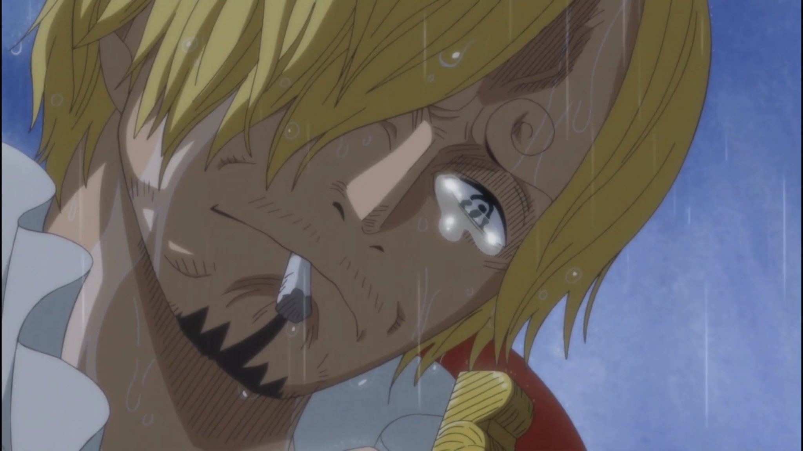

Site do Sanji triste
Aqui você observa o site a respeito deste grande personagem de One Piece. Marcha nos progresso independente.
GithubYoutube  Contato
Ir para o topo da página
Aqui você observa o site a respeito deste grande personagem de One Piece. Marcha nos progresso independente.
Github